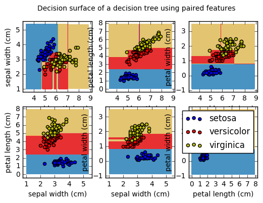
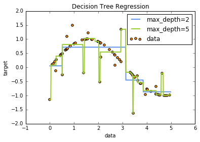

Decision Tree
Introduction
Decision Trees (DTs) are a non-parametric supervised learning method used for classification and regression. The goal is to create a model that predicts the value of a target variable by learning simple decision rules inferred from the data features.
from sklearn import tree
%matplotlib inline
X = [[0, 0], [1, 1]] Y = [0, 1]
clf = tree.DecisionTreeClassifier() clf = clf.fit(X, Y)
clf.predict([[2., 2.]])
array([1])
clf.predict_proba([[2., 2.]])
array([[0., 1.]])
DecisionTreeClassifier is capable of both binary (where the labels are [-1, 1]) classification and multiclass (where the labels are [0, ..., K-1]) classification.
Iris Tree
Using the Iris dataset, we can construct a tree as follows:
from sklearn.datasets import load_iris from sklearn import tree iris = load_iris() clf = tree.DecisionTreeClassifier() clf = clf.fit(iris.data, iris.target)
from sklearn.externals.six import StringIO
with open("iris.dot", 'w') as f: f = tree.export_graphviz(clf, out_file=f)
import os
os.unlink('iris.dot')
from sklearn.externals.six import StringIO import pydot dot_data = StringIO() tree.export_graphviz(clf, out_file=dot_data) graph = pydot.graph_from_dot_data(dot_data.getvalue()) graph.write_pdf("iris.pdf")
from IPython.display import Image dot_data = StringIO() tree.export_graphviz(clf, out_file=dot_data, feature_names=iris.feature_names, class_names=iris.target_names, filled=True, rounded=True, special_characters=True) graph = pydot.graph_from_dot_data(dot_data.getvalue()) Image(graph.create_png())
from IPython.display import Image Image(filename='iris.png')
clf.predict(iris.data[:1, :])
array([0])
clf.predict_proba(iris.data[:1, :])
array([[1., 0., 0.]])
Examples
1. Plot the decision surface of a decision tree on the iris dataset (source)
Plot the decision surface of a decision tree trained on pairs of features of the iris dataset.
For each pair of iris features, the decision tree learns decision boundaries made of combinations of simple thresholding rules inferred from the training samples.
import numpy as np import matplotlib.pyplot as plt #=======model================ from sklearn.tree import DecisionTreeClassifier #======= data ================================= from sklearn.datasets import load_iris
- Data and Parameter
# Parameters n_classes = 3 plot_colors = "bry" plot_step = 0.02 # Load data iris = load_iris()
- Plot
for pairidx, pair in enumerate([[0, 1], [0, 2], [0, 3], [1, 2], [1, 3], [2, 3]]): # We only take the two corresponding features X = iris.data[:, pair] y = iris.target # Train clf = DecisionTreeClassifier().fit(X, y) # Plot the decision boundary plt.subplot(2, 3, pairidx + 1) x_min, x_max = X[:, 0].min() - 1, X[:, 0].max() + 1 y_min, y_max = X[:, 1].min() - 1, X[:, 1].max() + 1 xx, yy = np.meshgrid(np.arange(x_min, x_max, plot_step), np.arange(y_min, y_max, plot_step)) Z = clf.predict(np.c_[xx.ravel(), yy.ravel()]) Z = Z.reshape(xx.shape) cs = plt.contourf(xx, yy, Z, cmap=plt.cm.Paired) plt.xlabel(iris.feature_names[pair[0]]) plt.ylabel(iris.feature_names[pair[1]]) plt.axis("tight") # Plot the training points for i, color in zip(range(n_classes), plot_colors): idx = np.where(y == i) plt.scatter(X[idx, 0], X[idx, 1], c=color, label=iris.target_names[i], cmap=plt.cm.Paired) plt.axis("tight") plt.suptitle("Decision surface of a decision tree using paired features") plt.legend() plt.show()

2. Understanding the decision tree structure (source)
The decision tree structure can be analysed to gain further insight on the relation between the features and the target to predict. In this example, we show how to retrieve:
- the binary tree structure;
- the depth of each node and whether or not it's a leaf;
- the nodes that were reached by a sample using the
decision_pathmethod; - the leaf that was reached by a sample using the apply method;
- the rules that were used to predict a sample;
- the decision path shared by a group of samples.
import numpy as np #======= preprocessing& model selection============ from sklearn.model_selection import train_test_split #======== model ================ from sklearn.tree import DecisionTreeClassifier #========= data ============== from sklearn.datasets import load_iris
iris = load_iris() X = iris.data y = iris.target X_train, X_test, y_train, y_test = train_test_split(X, y, random_state=0)
estimator = DecisionTreeClassifier(max_leaf_nodes=3, random_state=0) estimator.fit(X_train, y_train)
DecisionTreeClassifier(class_weight=None, criterion='gini', max_depth=None,
max_features=None, max_leaf_nodes=3, min_impurity_split=1e-07,
min_samples_leaf=1, min_samples_split=2,
min_weight_fraction_leaf=0.0, presort=False, random_state=0,
splitter='best')
- The decision estimator has an attribute called tree_ which stores the entire
tree structure and allows access to low level attributes. The binary tree
tree_ is represented as a number of parallel arrays. The i-th element of each
array holds information about the node
i. Node 0 is the tree's root. NOTE: Some of the arrays only apply to either leaves or split nodes, resp. In this case the values of nodes of the other type are arbitrary!*
Among those arrays, we have: - left_child, id of the left child of the node - right_child, id of the right child of the node - feature, feature used for splitting the node - threshold, threshold value at the node
Using those arrays, we can parse the tree structure:
n_nodes = estimator.tree_.node_count children_left = estimator.tree_.children_left children_right = estimator.tree_.children_right feature = estimator.tree_.feature threshold = estimator.tree_.threshold
The tree structure can be traversed to compute various properties such as the depth of each node and whether or not it is a leaf.
node_depth = np.zeros(shape=n_nodes) is_leaves = np.zeros(shape=n_nodes, dtype=bool) stack = [(0, -1)] # seed is the root node id and its parent depth while len(stack) > 0: node_id, parent_depth = stack.pop() node_depth[node_id] = parent_depth + 1 # If we have a test node if (children_left[node_id] != children_right[node_id]): stack.append((children_left[node_id], parent_depth + 1)) stack.append((children_right[node_id], parent_depth + 1)) else: is_leaves[node_id] = True print("The binary tree structure has %s nodes and has " "the following tree structure:" % n_nodes)
The binary tree structure has 5 nodes and has the following tree structure:
for i in range(n_nodes): if is_leaves[i]: print("%snode=%s leaf node." % (node_depth[i] * "\t", i)) else: print("%snode=%s test node: go to node %s if X[:, %s] <= %ss else to " "node %s." % (node_depth[i] * "\t", i, children_left[i], feature[i], threshold[i], children_right[i], )) print()
- First let's retrieve the decision path of each sample. The decision_path method allows to retrieve the node indicator functions. A non zero element of indicator matrix at the position (i, j) indicates that the sample i goes through the node j.
node_indicator = estimator.decision_path(X_test)
- Similarly, we can also have the leaves ids reached by each sample.
leave_id = estimator.apply(X_test)
- Now, it's possible to get the tests that were used to predict a sample or a group of samples. First, let's make it for the sample.
sample_id = 0 node_index = node_indicator.indices[node_indicator.indptr[sample_id]: node_indicator.indptr[sample_id + 1]] print('Rules used to predict sample %s: ' % sample_id) for node_id in node_index: if leave_id[sample_id] != node_id: continue if (X_test[sample_id, feature[node_id]] <= threshold[node_id]): threshold_sign = "<=" else: threshold_sign = ">" print("decision id node %s : (X[%s, %s] (= %s) %s %s)" % (node_id, sample_id, feature[node_id], X_test[i, feature[node_id]], threshold_sign, threshold[node_id])) # For a group of samples, we have the following common node. sample_ids = [0, 1] common_nodes = (node_indicator.toarray()[sample_ids].sum(axis=0) == len(sample_ids)) common_node_id = np.arange(n_nodes)[common_nodes] print("\nThe following samples %s share the node %s in the tree" % (sample_ids, common_node_id)) print("It is %s %% of all nodes." % (100 * len(common_node_id) / n_nodes,))
Rules used to predict sample 0: decision id node 4 : (X[0, -2] (= 1.5) > -2.0) The following samples [0, 1] share the node [0 2] in the tree It is 40.0 % of all nodes.
3. Decision Tree Regression (source)
""" =================================================================== Decision Tree Regression =================================================================== A 1D regression with decision tree. The :ref:`decision trees <tree>` is used to fit a sine curve with addition noisy observation. As a result, it learns local linear regressions approximating the sine curve. We can see that if the maximum depth of the tree (controlled by the `max_depth` parameter) is set too high, the decision trees learn too fine details of the training data and learn from the noise, i.e. they overfit. """ # print(__doc__) # Import the necessary modules and libraries import numpy as np from sklearn.tree import DecisionTreeRegressor import matplotlib.pyplot as plt
- Data
# Create a random dataset rng = np.random.RandomState(1) X = np.sort(5 * rng.rand(80, 1), axis=0) y = np.sin(X).ravel() y[::5] += 3 * (0.5 - rng.rand(16))
- Model
# Fit regression model regr_1 = DecisionTreeRegressor(max_depth=2) regr_2 = DecisionTreeRegressor(max_depth=5) regr_1.fit(X, y) regr_2.fit(X, y)
DecisionTreeRegressor(criterion='mse', max_depth=5, max_features=None,
max_leaf_nodes=None, min_samples_leaf=1, min_samples_split=2,
min_weight_fraction_leaf=0.0, presort=False, random_state=None,
splitter='best')
- Predict
# Predict X_test = np.arange(0.0, 5.0, 0.01)[:, np.newaxis] y_1 = regr_1.predict(X_test) y_2 = regr_2.predict(X_test)
- Plot
# Plot the results plt.figure() plt.scatter(X, y, c="darkorange", label="data") plt.plot(X_test, y_1, color="cornflowerblue", label="max_depth=2", linewidth=2) plt.plot(X_test, y_2, color="yellowgreen", label="max_depth=5", linewidth=2) plt.xlabel("data") plt.ylabel("target") plt.title("Decision Tree Regression") plt.legend() plt.show()

4. Multi-output Decision Tree Regression (source)
An example to illustrate multi-output regression with decision tree.
The decision trees is used to predict simultaneously the noisy x and y observations of a circle given a single underlying feature. As a result, it learns local linear regressions approximating the circle.
We can see that if the maximum depth of the tree (controlled by the
max_depth parameter) is set too high, the decision trees learn too fine
details of the training data and learn from the noise, i.e. they overfit.
import numpy as np import matplotlib.pyplot as plt from sklearn.tree import DecisionTreeRegressor
- Data: Create a random dataset
rng = np.random.RandomState(1) X = np.sort(200 * rng.rand(100, 1) - 100, axis=0) y = np.array([np.pi * np.sin(X).ravel(), np.pi * np.cos(X).ravel()]).T y[::5, :] += (0.5 - rng.rand(20, 2))
- Model: Fit regression model
regr_1 = DecisionTreeRegressor(max_depth=2) regr_2 = DecisionTreeRegressor(max_depth=5) regr_3 = DecisionTreeRegressor(max_depth=8) regr_1.fit(X, y) regr_2.fit(X, y) regr_3.fit(X, y)
DecisionTreeRegressor(criterion='mse', max_depth=8, max_features=None,
max_leaf_nodes=None, min_impurity_split=1e-07,
min_samples_leaf=1, min_samples_split=2,
min_weight_fraction_leaf=0.0, presort=False, random_state=None,
splitter='best')
- Predict
X_test = np.arange(-100.0, 100.0, 0.01)[:, np.newaxis] y_1 = regr_1.predict(X_test) y_2 = regr_2.predict(X_test) y_3 = regr_3.predict(X_test)
- Plot
plt.figure() s = 50 plt.scatter(y[:, 0], y[:, 1], c="navy", s=s, label="data") plt.scatter(y_1[:, 0], y_1[:, 1], c="cornflowerblue", s=s, label="max_depth=2") plt.scatter(y_2[:, 0], y_2[:, 1], c="c", s=s, label="max_depth=5") plt.scatter(y_3[:, 0], y_3[:, 1], c="orange", s=s, label="max_depth=8") plt.xlim([-6, 6]) plt.ylim([-6, 6]) plt.xlabel("target 1") plt.ylabel("target 2") plt.title("Multi-output Decision Tree Regression") plt.legend() plt.show()